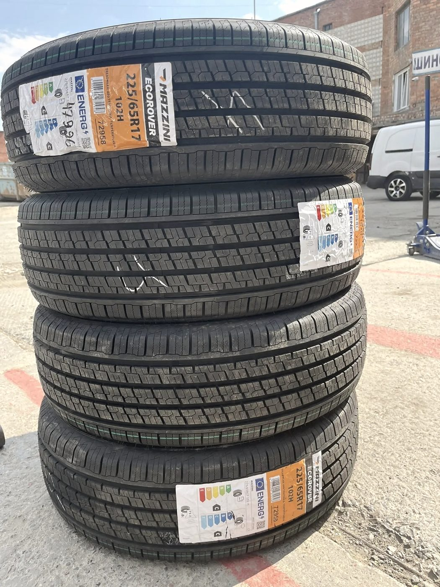
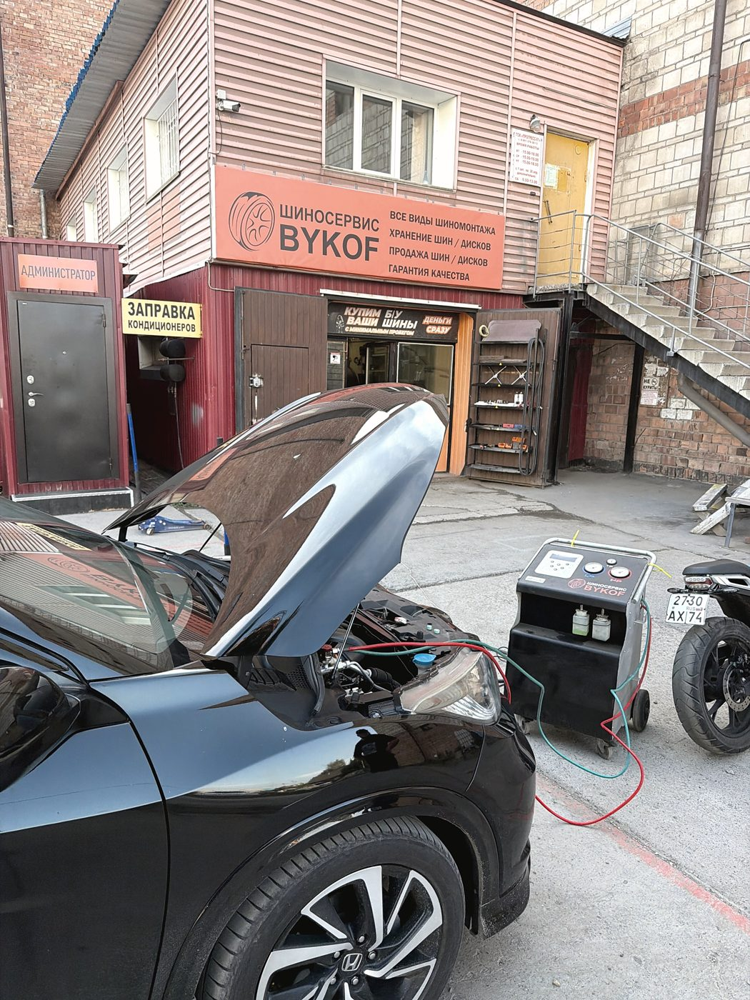
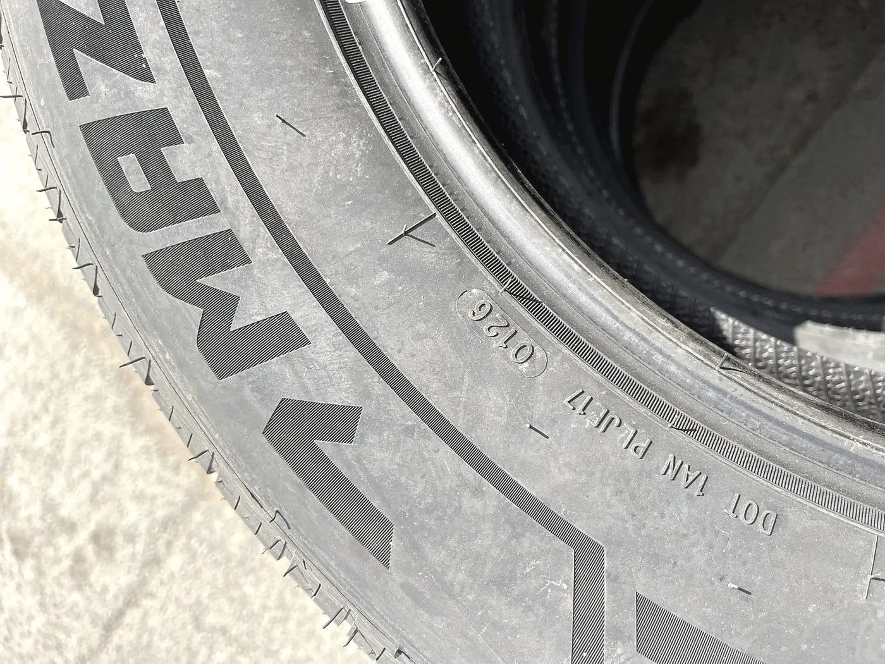
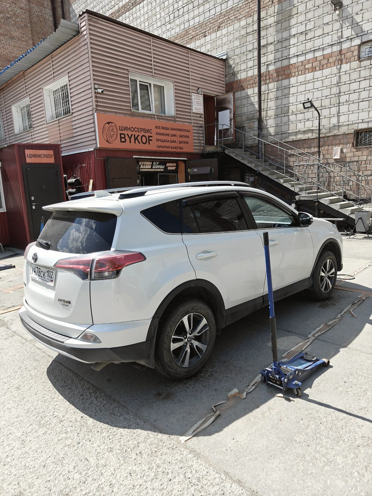

Шиномонтажная мастерская · Пермская улица, 59/2 · Новосибирск
Шиномонтаж,
где не страшно
прислониться к стене
Переобувка, ремонт порезов, правка дисков, ошиповка и хранение второго комплекта. Чисто, по записи и с объяснениями — даже если вы про колёса ничего не знаете.

Сверх переобувки
Четыре вещи,
которых обычно не делают
Они не стоят отдельных денег и занимают лишние десять минут. Но именно из-за них колесо потом не прикипает, а руль не бьёт через месяц.
Счищаем со ступицы старую ржавчину и грязь. Иначе диск садится с перекосом — и появляется биение, которое потом ищут на балансировке.
Обрабатываем посадочные места. Весной колесо снимется руками, а не киянкой и не в сервисе за деньги.
Раз колесо всё равно снято — чистим и смотрим состояние дисков и колодок. Если есть что сказать, скажем, но менять не заставим.
Отжившее забираем на утилизацию. Не нужно везти четыре покрышки домой и думать, куда их деть.
Хранение шин
Второй комплект
живёт у нас
Переобулись — и уехали налегке. Колёса лежат на складе до сезона: не на балконе, не в гараже у тёщи и не в багажнике весь год. К сезону позвоним и запишем.
Занятая ячейкаСвободные есть — звоните и записывайтесь
Работы
Колёса и диски
Переобувка и балансировка
Снять, разбортировать, поставить, отбалансировать. Со ступицами и медной смазкой.
Ремонт порезов и проколов
Жгут, латка или камера — выбираем по месту повреждения и говорим цену заранее.
Правка и прокатка дисков
Литьё и штамповка. Убираем биение после ямы.
Сварка дисков
Завариваем трещину, зачищаем шов, проверяем на герметичность.
Ошиповка шин
Полная и ремонтная, замена вылетевших шипов.
Подбор и продажа резины
Подберём комплект под машину и бюджет. Есть новая и хорошая б/у, старую выкупаем.
Хранение шин
Сезонное хранение второго комплекта с записью на переобувку к сроку.



Отзывы · 4,9 из 5 по 371 оценке в 2ГИС
«Вы разрушили стереотип шиномонтажки в гараже, где страшно к стене прикоснуться»
Елена Вяткина · 31 июля 2026
Впервые за долгое время уехал с шиномонтажа с чувством, что мастерам не всё равно на мой автомобиль. Кроме стандартной балансировки, ребята почистили тормозные диски и ступицы от старой ржавчины и грязи — этого никто никогда не делает по умолчанию — и обработали медной смазкой.
Иаан Тищенко · 10 июня 2026
Дружелюбный мастер Алексей очень быстро определил, с каким колесом проблема. Быстро нашёл, устранил, и буквально через пять минут с начала обращения я довольная поехала дальше по делам.
Татьяна Титова · 2 июля 2026
Контакты
Пермская, 59/2
Новосибирск